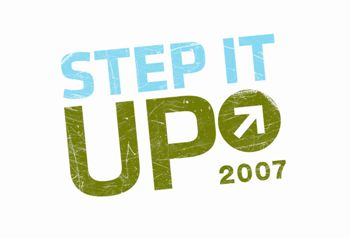

Citizens across the nation are organizing rallies on April 14, in conjunction with the week of Earth Day, to raise awareness about climate change. To coordinate the rallies, a new group has been formed, initiated by environmentalist Bill McKibben. Anyone, anywhere can organize a rally or get involved with others in their area. Local communities are urged to schedule rallies at iconic natural locations, such as the glaciers of Mount Rainier in Washington and the Shawangunk Cliffs in New York. To learn more, see News from Mother and check out what’s happening at Step It Up 2007.
|
 STEP IT UP The Step It Up climate change awareness campaign was launched in 2007. |
|
|